Manutenzioni
Questo documento descrive le procedure di manutenzione ordinaria e straordinaria delle macchine Donatoni, fornendo indicazioni per eseguire correttamente controlli, verifiche e interventi programmati.
L’obiettivo è preservare l’efficienza e l’affidabilità della macchina, prevenire eventuali anomalie e ridurre il rischio di fermi imprevisti.
- FRESE STANDARD
- TABELLA COMPARATIVA DEI LUBRIFICANTI
- MN0001 TEST DEL CIRCUITO DI EMERGENZA
- MN0002 MANUTENZIONE MENSILE POMPA DEL VUOTO
- MN0003 TEST FUNZIONAMENTO SEGNALE LUMINOSO
- MN0004 INGRASSAGGIO GUIDE LINEARI SISTEMA MOVE
- MN0005 INGRASSAGGIO CUSCINETTO CHIOCCIOLA ASSE Z
- MN0006 INGRASSAGGIO CUSCINETTI ALBERO TRASMISSIONE PONTE ASSE Y
- MN0007 CONTROLLO LUBRIFICANTE SISTEMA DI INGRASSAGGIO AUTOMATICO
- MN0008 INGRASSAGGIO SNODI DEL BANCO RIBALTABILE
- MN0009 INGRASSAGGIO SNODO BRACCIO CONSOLE
- MN0010 CONTROLLO TUBAZIONI E RACCORDI IMPIANTO OLEODINAMICO
- MN0011 CAMBIO OLIO CENTRALINA IDRAULICA
- MN0012 PULIZIA FILTRI QUADRO ELETTRICO
- MN0013 MANUTENZIONE GRUPPO INGRESSO ARIA COMPRESSA
- MN0014 CUSCINETTI ELETTROMANDRINO
- MN0041 INGRASSAGGIO GUIDE LINEARI MANDRINO LATERALE TOOL PLUS
- MN0042 PULIZIA FILTRO IMPIANTO PNEUMATICO
- MN0043 VERIFICA TENUTA GIUNTO ROTANTE
- WATERJET
- MN0044 SOSTITUZIONE ORIFIZIO
- MN0045 INGRASSAGGIO MANUALE
- MN0039 PULIZIA FILTRI PRESE DI AERAZIONE QUADRO ELETTRICO
- MN0015 CONTROLLO TUBAZIONI E RACCORDI DELLIMPIANTO DI ALTA PRESSIONE
- MN0030 CONTROLLO LUBRIFICANTE SISTEMA DI INGRASSAGGIO AUTOMATICO
- MN0016 CONTROLLO DELLO STATO DI PULIZIA DELLA VASCA e SVUOTAMENTO
- MN0035 CONTROLLARE LA QUALITÀ DELLACQUA
- MN0040 MANUTENZIONE GRUPPO INGRESSO ARIA COMPRESSA
- POMPA BFT
- POMPA DONATONI HYDROX
- MN0046 Verifica eo sostituzione dei filtri acqua della pompa Hydrox
- MN0048 Controlli vari su pompa Hydrox
- MN0049 Sostituzione olio della pompa Hydrox
- MN0050 Sostituzione olio della pompa Hydrox
- MN0051 Manutenzione corpo della pompa alta pressione
- MN0052 Sostituzione delle cinghie di trasmissione della pompa Hydrox
- POMPA HYPERTHERM
- GRUPPO OTTURATORE PER ALTA PRESSIONE
- MN0029 RIPARARE LA VALVOLA DI SPURGO
- MN0017 RIPARARE LE VALVOLE DI RITEGNO E GLI OTTURATORI PER LA BASSA PRESSIONE
- MN0018 RIPARARE IL CILINDRO DELLALTA PRESSIONE
- MN0019 SOSTITUIRE LA CARTUCCIA DELLELEMENTO DI TENUTA DELLALTA PRESSIONE
- MN0021 SOSTITUIRE LOTTURATORE PER LA BASSA PRESSIONE
- MN0022 INVERTIRE IL CILINDRO DELLALTA PRESSIONE
- MN0023 SOSTITUIRE IL CILINDRO DELLALTA PRESSIONE
- MN0024 SOSTITUIRE IL GRUPPO VALVOLA DI RITEGNO
- MN0025 SOSTITUIRE IL GRUPPO ALLOGGIAMENTO DELLELEMENTO DI TENUTA
- MN0026 SOSTITUIRE LADATTATORE IN USCITA
- MN0028 RIPARAZIONE DELLA SEZIONE IDRAULICA CENTRALE
- MN0034 SOSTITUIRE IL FILTRO DELLACQUA
- MN0031 SOSTITUIRE IL CORPO DELLA VALVOLA DI SPURGO
- MN0032 PULIRE IL REFRIGERATORE AD ARIA
- MN0036 SOSTITUIRE LELEMENTO DEL FILTRO IDRAULICO
- MN0037 SOSTITUIRE IL FLUIDO IDRAULICO
- MN0038 LUBRIFICARE I CUSCINETTI DEL MOTORE PRIMARIO
- MN0020 SOSTITUIRE IL GRUPPO OTTURATORE PER LALTA PRESSIONE
- MN0047 SOSTITUZIONE FOCALIZZATORE
- MN0053 SOSTITUZIONE TUBO ABRASIVO
- ISTRUZIONI DI SICUREZZA
Lista di manutenzioni standard per una fresa tipo JET625

Prima di procedere leggere attentamente le | |
Intervallo200 ore di lavoro | Complessità operazioneLow01 / 05 |
Figura autorizzataOperatore macchina | DPI previsti:  |
Video
Procedura
A macchina accesa e predisposta per funzionamento in modo di accesso alla zona pericolosa premere il pulsante di arresto d’emergenza e verificare:
Che sul monitor del pannello di comando venga visualizzato lo stato di “EMERGENZA ATTIVA
Che si accenda il settore rosso del segnale luminoso posto sul pannello comandi.
Che effettuando un qualsiasi movimento di uno degli assi della macchina tramite le leve ad azione mantenuta presenti sul pannello di comando non avvenga alcun movimento all’interno della macchina.
Ripristinare il funzionamento della macchina e verificare:
Che sul monitor del pannello di comando scompaia la segnalazione di “EMERGENZA ATTIVA”.
Che si spenga il settore rosso del segnale luminoso posto sul pannello comandi.
Che effettuando un qualsiasi movimento di uno degli assi della macchina tramite le leve ad azione mantenuta presenti sul pannello di comando si verifichi il corrispettivo movimento all’interno della macchina
Prima di procedere leggere attentamente le | |
Intervalloogni settimana; ogni mese | Complessità operazioneLow01 / 05 |
Figura autorizzataOperatore macchina | DPI previsti:  |
Video
Procedura
Il mantenimento in buono stato della pompa vuoto dipende dal livello di pulizia dell’acqua dell’impianto idrico. E’ a carico dell’acquirente assicurarsi che le caratteristiche dell’acqua utilizzata siano conformi a quanto previsto dal manuale uso e manutenzione del produttore della pompa .
Ogni settimana:
Verificare che il livello dell’acqua nella vasca arrivi al livello del tubo di scolo di “troppo pieno”
In caso di utilizzo sporadico del sistema del vuoto azionare settimanalmente la pompa del vuoto attraverso il comando di attivazione vuoto (fare riferimento alla sez. B del manuale “Istruzione per l’uso” abbinato al presente manuale)
Ogni mese:
Effettuare una accurata pulizia della vasca rimuovendo gli eventuali depositi di sedimento accumulati sul fondo
Per indicazioni più dettagliate sulla manutenzione della pompa vuoto fare riferimento al manuale uso e manutenzione
120113044828_Manuale_Vuoto_Italiano.pdf
Prima di procedere leggere attentamente le | |
Intervallo— | Complessità operazioneLow01 / 05 |
Figura autorizzataOperatore macchina | DPI previsti:  |
Immagini

Procedura
Test sezione arancione del segnale luminoso:
Predisporre la macchina per funzionamento in modo di accesso alla zona pericolosa come descritto al capitolo - MODO DI ACCESSO ALLA ZONA PERICOLOSA e verificare l’accensione del settore arancione del segnale luminoso in modalità lampeggiante.
Predisporre la macchina per funzionamento in “modalità lenta” (fare riferimento alla sez. B del manuale “Istruzione per l’uso” abbinato al presente manuale) e verificare l’accensione del settore arancione del segnale luminoso in modalità fissa.
Test sezione verde del segnale luminoso:
Predisporre la macchina per funzionamento in modo lavoro come descritto al capitolo - MODO LAVORO, effettuare un qualsiasi movimento di uno degli assi della macchina tramite le leve ad azione mantenuta presenti sul pannello di comando (fare riferimento alla sez. B del manuale “Istruzione per l’uso” abbinato al presente manuale) e verificare l’accensione del settore verde del segnale luminoso in modalità lampeggiante durante la movimentazione
Test sezione rossa del segnale luminoso:
premere il pulsante d’arresto d’emergenza presente sul pannello di controllo e verificare l’accensione del settore rosso del segnale luminoso in modalità lampeggiante.
NOTA : per ripristinare il funzionamento della macchina procedere come descritto nel manuale
Prima di procedere leggere attentamente le | |
IntervalloOgni 300 ore lavoro | Complessità operazioneLow01 / 05 |
Figura autorizzataOperatore macchina | DPI previsti:  |
Video
Immagini

Procedura
Almeno ogni 300 ore lavoro provvedere tramite apposita pistola ad ingrassare le guide lineari del sistema MOVE con 1cm3 di grasso attraverso gli ugelli riportati in figura
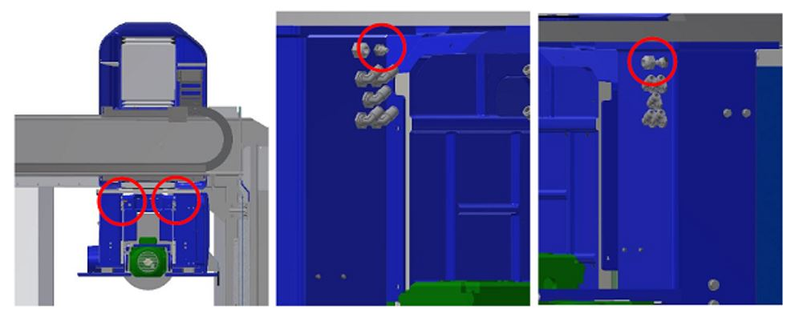
Prima di procedere leggere attentamente le | |
Intervalloogni 300 ore di lavoro | Complessità operazioneLow01 / 05 |
Figura autorizzataOperatore macchina | DPI previsti:  |
Immagini

Procedura
Almeno ogni 300 ore lavoro provvedere tramite apposita pistola ad ingrassare il cuscinetto della chiocciola asse Z con 1 cm3 di grasso attraverso l’ugello riportati in figura
L’ugello di ingrassaggio si trova nella parte laterale destra del canotto al di sotto del carter in figura ed è posizionato come indicato ed evidenziato nell’immagine.

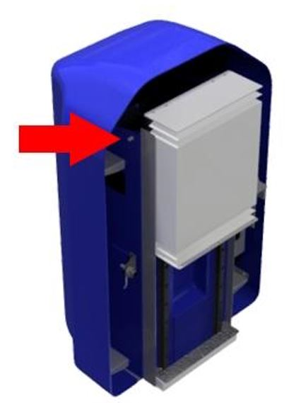
Prima di procedere leggere attentamente le | |
Intervalloogni 300 ore di lavoro | Complessità operazioneLow01 / 05 |
Figura autorizzataOperatore macchina | DPI previsti:  |
Video
Immagine

Procedura
Almeno ogni 300 ore lavoro provvedere tramite apposita pistola ad ingrassare i cuscinetti dell’albero di trasmissione asse Y con 1 cm3 di grasso attraverso gli ugelli riportati in figura
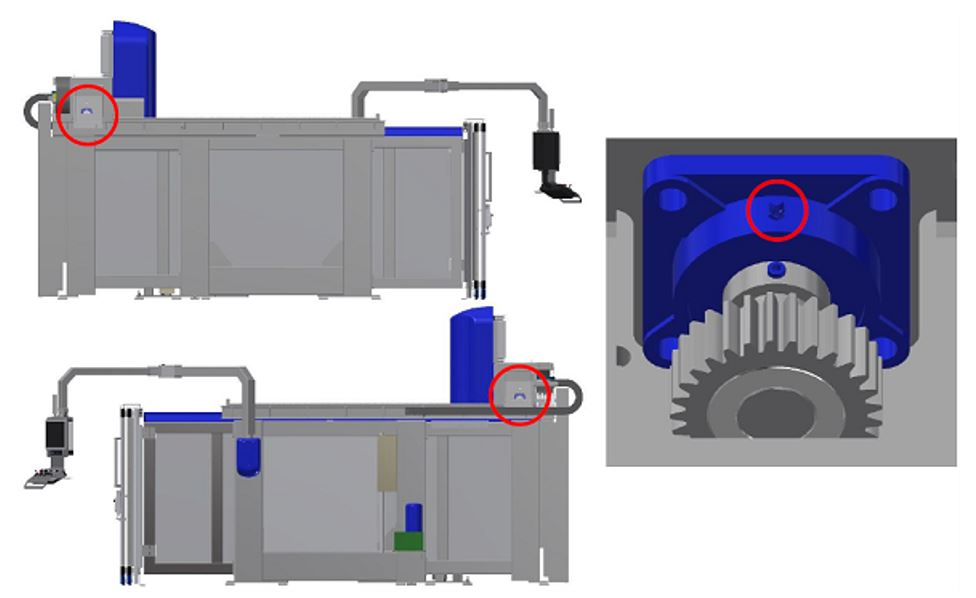
Prima di procedere leggere attentamente le | |
Intervalloogni 300 ore di lavoro | Complessità operazioneLow01 / 05 |
Figura autorizzataOperatore macchina | DPI previsti:  |
Immagini
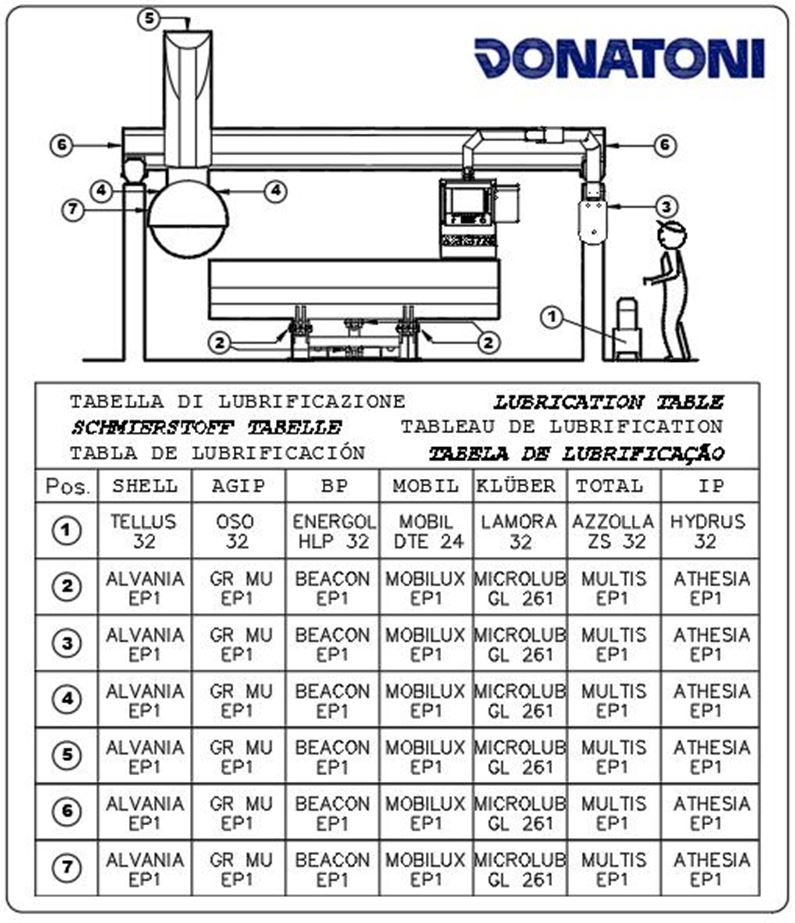
Procedura
Il sistema di ingrassaggio automatico è costituito da una centralina automatica che provvede ad ingrassare le utenze collegate secondo la tempistica programmata.
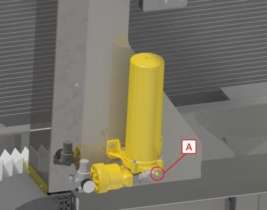
Il serbatoio deve essere reintegrato del grasso necessario senza che questo superi il livello massimo indicato.
Almeno ogni 500 ore lavoro eseguire il controllo del livello di grasso nel serbatoio e quando necessario provvedere al rabbocco utilizzando il tipo di grasso corretto
N.B. Un allarme a video avverte l’operatore quando il livello del grasso ha raggiunto il livello minimo nel serbatoio ed è quindi necessario il rabbocco.
Manuale specifico del dispositivo
Prima di procedere leggere attentamente le | |
Intervalloogni 6 mesi | Complessità operazioneLow01 / 05 |
Figura autorizzataOperatore macchina | DPI previsti:  |
Video
Immagini

Procedura
Almeno ogni 6 mesi provvedere tramite apposita pistola ad ingrassare gli snodi del banco ribaltabile con 1cm3 di grasso attraverso gli ugelli riportati in figura.

Prima di procedere leggere attentamente le | |
Intervallo— | Complessità operazioneLow01 / 05 |
Figura autorizzataOperatore macchina | DPI previsti:  |
Prima di procedere leggere attentamente le | |
Intervalloogni anno = 8760 h | Complessità operazioneLow01 / 05 |
Figura autorizzataOperatore macchina | DPI previsti:  |
Prima di procedere leggere attentamente le | |
Intervalloogni 2000 ore di lavoro | Complessità operazioneLow01 / 05 |
Figura autorizzataOperatore macchina | DPI previsti:  |
Video
Procedura
Il cambio dell'olio deve essere effettuato di norma almeno ogni 2000 ore lavoro, la sostituzione deve essere accompagnata da una accurata pulizia del serbatoio.
Lo svuotamento avviene attraverso il tappo in basso (pos B in figura) e l'introduzione del fluido in serbatoio deve essere fatta attraverso un filtro con maglie da 10 micron attraverso il tappo di carico (pos A in figura)
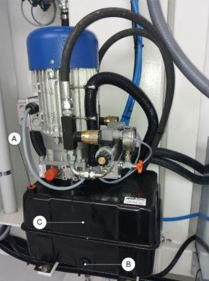
Prima di procedere leggere attentamente le | |
Intervalloogni 2000 ore di lavoro | Complessità operazioneLow01 / 05 |
Figura autorizzataOperatore macchina | DPI previsti:  |
Procedura
Operazioni
Ruotare l'interruttore A sulla posizione OFF |  |
|---|---|
Aprire gli sportelli D ed E | 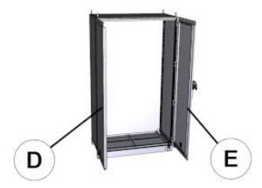 |
Togliere la protezione F e il filtro G |  |
Pulire il filtro utilizzando un getto d'aria compressa H | 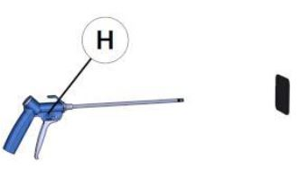 |
Ripristinare eseguendo la procedura inversa |
Prima di procedere leggere attentamente le | |
Intervallo— | Complessità operazioneLow01 / 05 |
Figura autorizzataOperatore macchina | DPI previsti:  |
Prima di procedere leggere attentamente le | |
Intervalloogni 1550 ore di lavoro | Complessità operazioneLow01 / 05 |
Figura autorizzataOperatore macchina | DPI previsti:  |
Prima di procedere leggere attentamente le | |
Intervalloogni 300 di lavoro | Complessità operazioneLow01 / 05 |
Figura autorizzataOperatore macchina | DPI previsti:  |
Video
Procedura
Almeno ogni 300 ore lavoro provvedere tramite apposita pistola ad ingrassare le guide lineari del sistema MOVE con 1cm3 di grasso attraverso gli ugelli riportati in figura
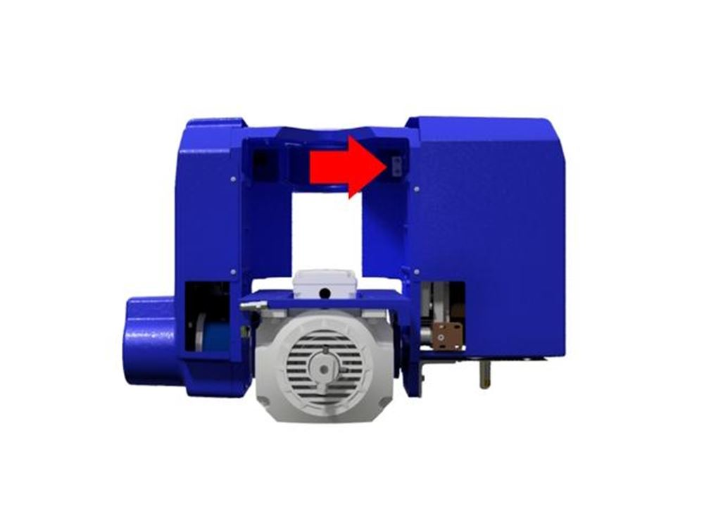
Prima di procedere leggere attentamente le | |
Intervalloogni 2000 ore di lavoro | Complessità operazioneLow01 / 05 |
Figura autorizzataOperatore macchina | DPI previsti:  |
Video
Istruzioni di sicurezza specifiche della manutenzione
Per la pulizia del filtro, prima di intervenire, depressurizzare l’impianto agendo sulla valvola di intercettazione del gruppo aria e bloccarla con un lucchetto.
(Vedere manuale del produttore
Procedura
Per le indicazioni relative alla manutenzione del gruppo ingresso aria compressa fare riferimento al manuale uso e manutenzione del produttore.
Prima di eseguire operazioni di manutenzione chiudere la valvola di intercettazione ed apporvi un lucchetto.
Prima di procedere leggere attentamente le | |
Intervalloogni 500 ore di lavoro | Complessità operazioneLow01 / 05 |
Figura autorizzataOperatore macchina | DPI previsti:  |
Procedura
Verificare che esternamente non ci siano segni di perdite di liquido refrigerante. In caso di perdite provvedere alla sostituzione con lo specifico ricambio.
Sostituzione
In caso di sostituzione procedere come descritto di seguito
Svitare il tappo | 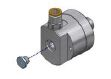 |
|---|---|
Infilare nel foro centrale una chiave a brugola da 6mm. | 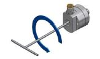 |
Riavvitare il tappo posteriore. | 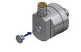 |
Spazio per le operazioni di manutenzione raggiungibile da bordo macchina per macchine tipo Waterjet.

Prima di procedere leggere attentamente le | |
Intervalloogni 70 ore di lavoro | Complessità operazioneLow01 / 05 |
Figura autorizzataOperatore macchina | DPI previsti:  |
Allentare (NON STACCARE) il raccordo del tubo alta pressione

Tenendo fermo il corpo valvola svitare la ghiera sotto

Sganciare e spostare la valvola

Svitare il corpo di giunzione per poter accedere alla sede dell’orifizio


Aiutandosi con un tubetto, una pinza o altro rimuovere l’orifizio usurato

Inserire il nuovo orifizio nella sede verificando l’orientamento corretto (parte conica verso l’alto)

Pulire i diversi raccordi mettendo poi il lubrificante anti-grippaggio (Blue Goop) prima del fissaggio

Procedere con la sequenza inversa per il rimontaggio rispettando le coppie di serraggio

Documenti allegati
Prima di procedere leggere attentamente le | |
Intervalloogni 300 ore di lavoro | Complessità operazioneLow01 / 05 |
Figura autorizzataOperatore macchina | DPI previsti:  |
Provvedere tramite apposita pistola ad ingrassare i diversi punti elencati di seguito con con 1cm3 di grasso EP1:
Guide lineari del mandrino laterale TOOL_
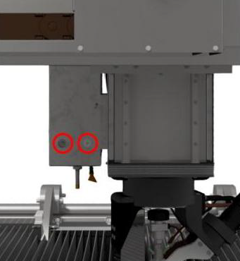
Guide lineari del tastatore lastra

Passaggio riduttore asse A
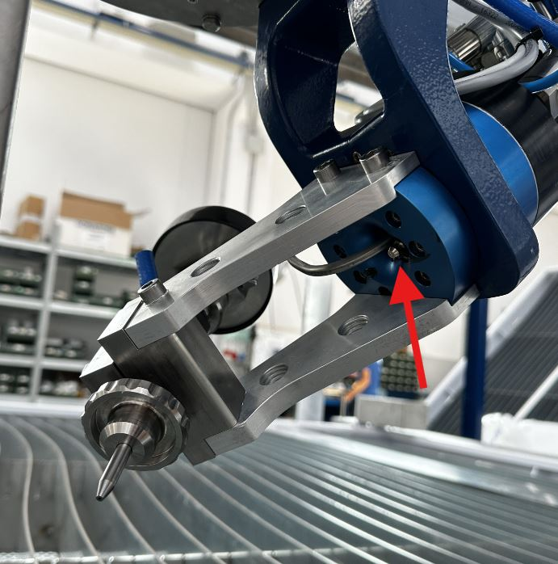
Tabella comparativa dei lubrificanti

Prima di procedere leggere attentamente le | |
Intervalloogni 2000 ore di lavoro | Complessità operazioneLow01 / 05 |
Figura autorizzataOperatore macchina | DPI previsti:  |
Spegnere correttamente la macchina e ruotare l’interruttore sulla posizione OFF

Togliere la mascherina sganciando da sotto e spostando verso l’alto

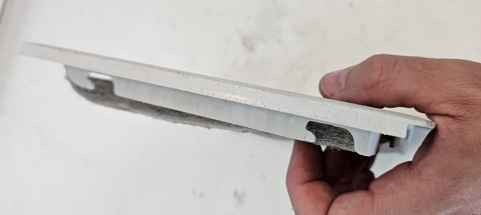
Pulire il filtro utilizzando una pistola dell’aria
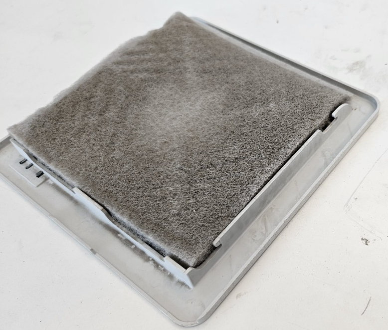
Rimontare il tutto con la procedura inversa
Prima di procedere leggere attentamente le | |
Intervalloogni 1000 ore di lavoro | Complessità operazioneLow01 / 05 |
Figura autorizzataOperatore macchina | DPI previsti:  |
Procedura
Posizionare la macchina al centro della vasca. Accendere la pompa e verificare se, lungo le tubazioni dell’alta pressione, ci sono perdite.
In caso di presenza di perdite, spegnere la pompa, premere il fungo di emergenza e procedere ad eliminare la perdita andando a serrare il raccordo con la corretta coppia di serraggio.
35 Nm per i raccordi da 1/4” di pollice
70 Nm per i raccordi da 3/8” di pollice
Quindi disinserire l’emergenza, abilitare i comandi e provare a riaccendere la pompa per controllare ulteriori perdite.
Al link sotto è disponibile lo schema dei tubi HP.
Prima di procedere leggere attentamente le | |
Intervalloogni 450 ore di lavoro | Complessità operazioneLow01 / 05 |
Figura autorizzataOperatore macchina | DPI previsti:  |
Procedura
Il sistema di ingrassaggio automatico è costituito da una centralina automatica che provvede ad ingrassare le utenze collegate secondo la tempistica programmata
Il serbatoio deve essere reintegrato del grasso necessario senza che questo superi il livello massimo indicato. Il reintegro deve essere effettuato attraverso l’apposito attacco (A in figura)

Prima di procedere leggere attentamente le | |
Intervallolegato al consumo di abrasivo | Complessità operazioneLow01 / 05 |
Figura autorizzataOperatore macchina | DPI previsti:  |
Procedura
Verificare che il ponte e gli altri elementi della macchina non entrino in contatto con le parti da movimentare
Aprire il rubinetto di scarico per svuotare la vasca

Sollevare il telaio lame utilizzando gli appositi supporti (Peso del telaio = 750Kg)
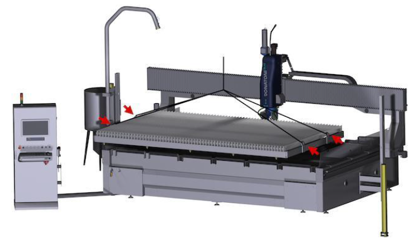
Togliere le griglie di recupero pezzi
(OPZIONALE) Sollevare le vasche di raccolta abrasivo e svuotarle. Procedere poi con la loro pulizia e verifica di integrità
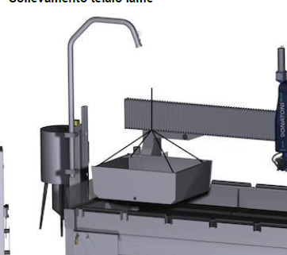
Pulire bene la vasca rimuovendo i residui di abrasivo
Riposizionare le vasche di raccolta abrasivo, le griglie e il piano lame
Prima di procedere leggere attentamente le | |
Intervalloogni 1000 ore di lavoro | Complessità operazioneLow01 / 05 |
Figura autorizzataOperatore macchina | DPI previsti:  |
Prima di procedere leggere attentamente le | |
Intervalloogni 400 ore di lavoro | Complessità operazioneLow01 / 05 |
Figura autorizzataOperatore macchina | DPI previsti:  |
Prima di procedere leggere attentamente le | |
Intervallo— | Complessità operazioneLow01 / 05 |
Figura autorizzataOperatore macchina | DPI previsti:  |
Prima di procedere leggere attentamente le | |
Intervallo— | Complessità operazioneLow01 / 05 |
Figura autorizzataOperatore macchina | DPI previsti:  |
Prima di procedere leggere attentamente le | |
Intervalloogni 150 ore di lavoro | Complessità operazioneLow01 / 05 |
Figura autorizzataOperatore macchina | DPI previsti:  |
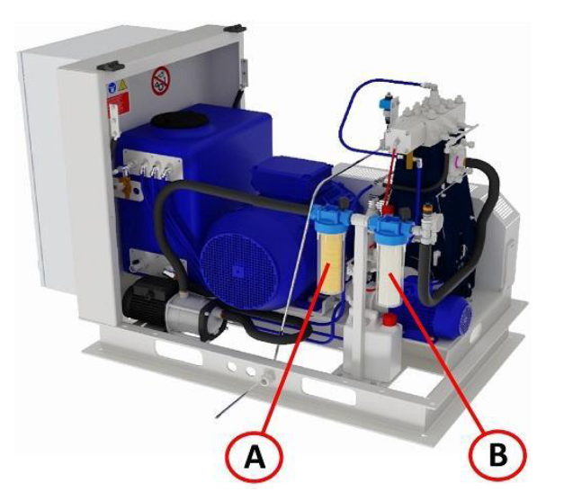
Posizione | Descrizione | Grado di filtrazione |
|---|---|---|
A | Filtro dell'acqua con cartuccia da 9/10" | 5 μm |
B | Filtro dell'acqua con cartuccia da 9/10" | 1 μm |
Verifica: quando sono da sostituire?
È necessario sostituire le cartucce filtranti quando la perdita di carico nel sistema diventa superiore a 1 bar (quando la differenza di pressione tra il punto ingresso X e quello in uscita Y diventa: X-Y > 1 bar)
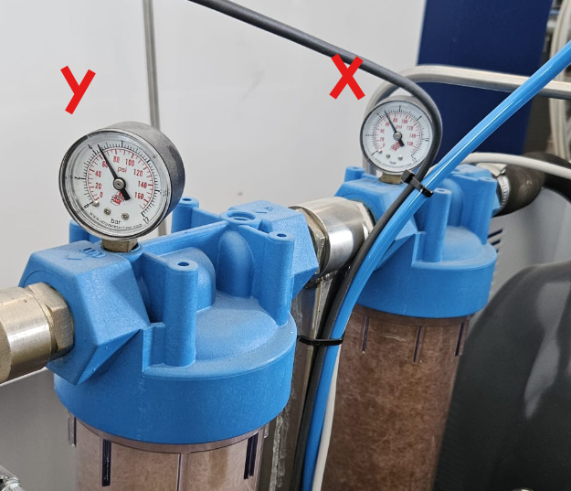
Procedura di sostituzione
Svitare il contenitore del filtro utilizzando la chiave in dotazione;
Rimuovere la cartuccia filtrante usata;
Pulire il contenitore del filtro (rimuovendo eventuali residui o detriti);
Inserire la nuova cartuccia filtrante (prestare attenzione a installare la cartuccia con il corretto grado di filtrazione in ciascuna posizione);
Posizionare il contenitore del filtro nella sede e serrare utilizzando la chiave;
Prima di procedere leggere attentamente le | |
Intervallomensile | Complessità operazioneLow01 / 05 |
Figura autorizzataOperatore macchina | DPI previsti:  |
Verifica livello olio motore pompa
Togliere l’astina e verificare il livello.
Verificare inoltre che non ci sia acqua di taglio nel lubrificante “Emulsione”
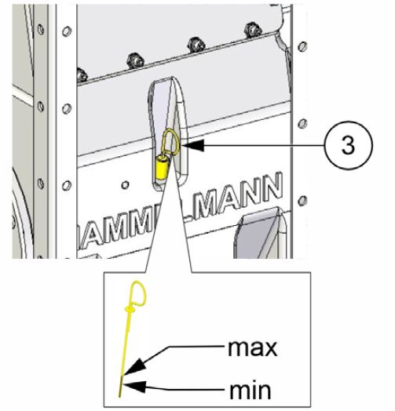
Verifica contenitore acqua sporca
Qualora nel contenitore si riscontri una quantità eccessiva di fluido o emulsione, contattare l’assistenza tecnica Donatoni Service srl per ricevere istruzioni o per programmare una verifica del sistema di tenuta della pompa a pistoni

Interstizio della pompa ad alta pressione (controllo visivo)
controllare che i soffietti non siano danneggiati. in caso di dannicontattare l’assistenza
In caso di danni al soffietto controllare anche l’eventuale corrosione sull’asta del
pistone.Verificare se il fluido d’esercizio è presente nello spazio intermedio; in tal
caso contattare l’assistenza
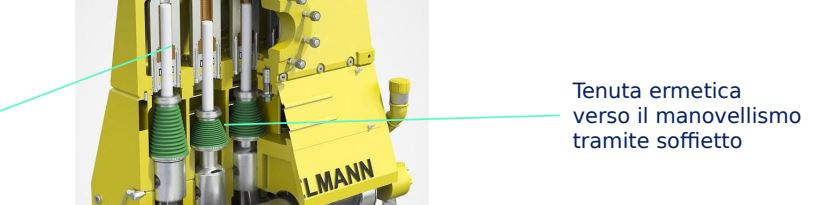
Prima di procedere leggere attentamente le | |
Intervallo1 anno o 4 anni dalla seconda volta | Complessità operazioneMedium03 / 05 |
Figura autorizzataOperatore macchina | DPI previsti:  |
Per raggiungere il tappo della valvola di scarico e il bocchettone di riempimento, aprire il cofano di copertura (A) e rimuovere il carter frontale (C) e laterale (B).
Per raccogliere l’olio è necessario un recipiente di raccolta idoneo con capacità superiore a 5litri.
Collocare uno straccio o simili sotto il tappo di scarico olio (E).

Rimuovere il tappo (D) dal bocchettone di riempimento dell’olio.
Per scaricare l’olio utilizzare il tubo flessibile con l’apposito avvitaggio fornito in dotazione. Fare in modo che l’estremità aperta rimanga dentro il recipiente predisposto per la raccolta
Svitare il tappo della valvola di scarico olio (E). L’olio inizia a fuoriuscire non appena si avvita il collegamento a vite del tubo flessibile.
Verificare la presenza di emulsione nell’olio esausto. Se è presente un’emulsione, eliminare l’umidità dal circuito dell’olio.
Togliere il tubo flessibile e avvitare il tappo della valvola di scarico olio (E).
Riempire il basamento con circa 4.3 litri di olio nuovo verificando il livello tramite l’astina.
Classe di viscosità dell’olio: PAO ISO VG 320.
Al termine del documento è presente una tabella comparativa.
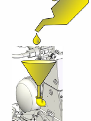 | 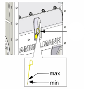 |
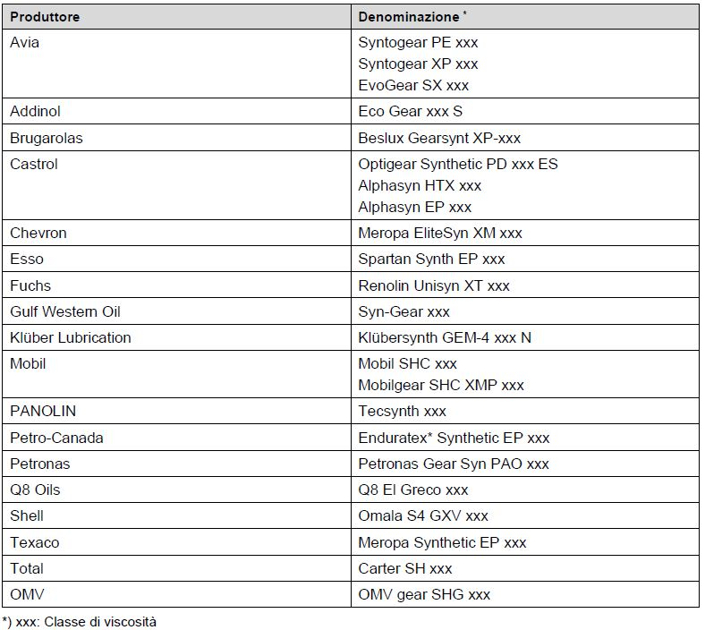
Prima di procedere leggere attentamente le | |
Intervallo1 anno o 4 anni dalla seconda volta | Complessità operazioneMedium03 / 05 |
Figura autorizzataOperatore macchina | DPI previsti:  |
Vedi pagina
Prima di procedere leggere attentamente le | |
Intervalloogni 1500 ore di funzionamento | Complessità operazioneCritical05 / 05 |
Figura autorizzataService Donatoni | DPI previsti:  |
Alcune parti della pompa sono soggette ad usura, la loro manutenzione deve essere eseguita da personale opportunamente formato.
Le manutenzioni devono essere fatte sulla testa della pompa e gruppo pistone/cilindro. In base alle ore ci sono diversi componenti da sostituire.
Rivolgersi all’assistenza Donatoni per la manutenzione
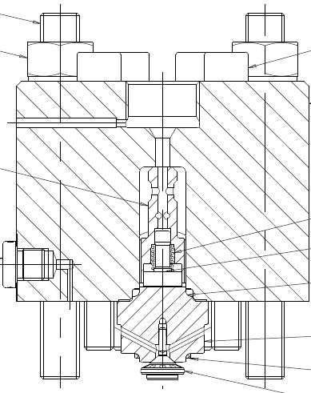
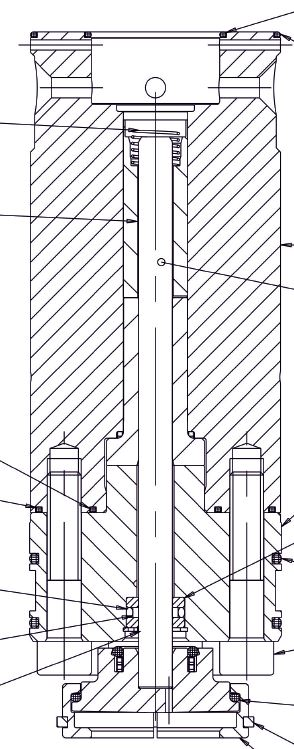
Prima di procedere leggere attentamente le | |
Intervalloogni 6000 ore di funzionamento | Complessità operazioneCritical05 / 05 |
Figura autorizzataService Donatoni | DPI previsti:  |
Il tensionamento delle cinghie deve essere effettuato secondo precise specifiche. Rivolgersi all’assistenza Donatoni per la manutenzione
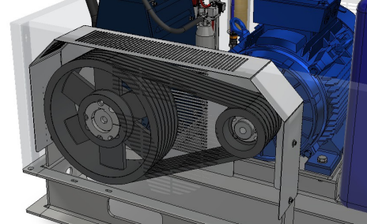
Prima di procedere leggere attentamente le | |
Intervallo— | Complessità operazioneLow01 / 05 |
Figura autorizzataOperatore macchina | DPI previsti:  |
Immagini
Prima di procedere leggere attentamente le | |
Intervalloogni 2000 ore di lavoro | Complessità operazioneLow01 / 05 |
Figura autorizzataOperatore macchina | DPI previsti:  |
Immagini
Prima di procedere leggere attentamente le | |
Intervalloogni 1000 ore di lavoro | Complessità operazioneLow01 / 05 |
Figura autorizzataOperatore macchina | DPI previsti:  |
Immagini
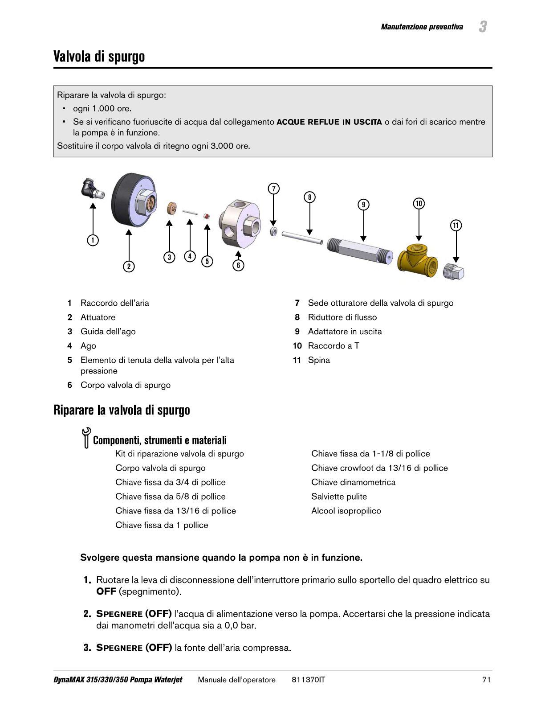
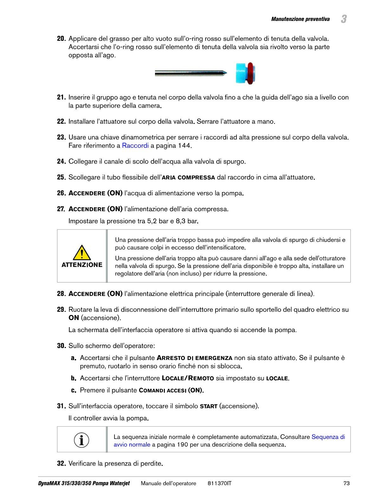
Prima di procedere leggere attentamente le | |
Intervalloogni 500 ore di lavoro | Complessità operazioneLow01 / 05 |
Figura autorizzataOperatore macchina | DPI previsti: |
Prima di procedere leggere attentamente le | |
Intervalloogni 500 ore di lavoro | Complessità operazioneLow01 / 05 |
Figura autorizzataOperatore macchina | DPI previsti:  |
Prima di procedere leggere attentamente le | |
Intervalloogni 500 ore di lavoro | Complessità operazioneLow01 / 05 |
Figura autorizzataOperatore macchina | DPI previsti:  |
Prima di procedere leggere attentamente le | |
Intervalloogni 1000 ore di lavoro | Complessità operazioneLow01 / 05 |
Figura autorizzataOperatore macchina | DPI previsti:  |
Prima di procedere leggere attentamente le | |
Intervalloogni 1500 ore di lavoro | Complessità operazioneLow01 / 05 |
Figura autorizzataOperatore macchina | DPI previsti:  |
Prima di procedere leggere attentamente le | |
Intervalloogni 3000 ore di lavoro | Complessità operazioneLow01 / 05 |
Figura autorizzataOperatore macchina | DPI previsti:  |
Prima di procedere leggere attentamente le | |
Intervalloogni 3000 ore di lavoro | Complessità operazioneLow01 / 05 |
Figura autorizzataOperatore macchina | DPI previsti:  |
Prima di procedere leggere attentamente le | |
Intervalloogni 6000 ore di lavoro | Complessità operazioneLow01 / 05 |
Figura autorizzataOperatore macchina | DPI previsti:  |
Prima di procedere leggere attentamente le | |
Intervalloogni 6000 ore di lavoro | Complessità operazioneLow01 / 05 |
Figura autorizzataOperatore macchina | DPI previsti:  |
Prima di procedere leggere attentamente le | |
Intervalloogni 12000 ore di lavoro | Complessità operazioneLow01 / 05 |
Figura autorizzataOperatore macchina | DPI previsti:  |
Prima di procedere leggere attentamente le | |
Intervalloogni 1000 ore di lavoro | Complessità operazioneLow01 / 05 |
Figura autorizzataOperatore macchina | DPI previsti:  |
Prima di procedere leggere attentamente le | |
Intervalloogni 3000 ore di lavoro | Complessità operazioneLow01 / 05 |
Figura autorizzataOperatore macchina | DPI previsti:  |
Prima di procedere leggere attentamente le | |
Intervalloogni 1000 ore di lavoro | Complessità operazioneLow01 / 05 |
Figura autorizzataOperatore macchina | DPI previsti:  |
Prima di procedere leggere attentamente le | |
Intervalloogni 1500 ore di lavoro | Complessità operazioneLow01 / 05 |
Figura autorizzataOperatore macchina | DPI previsti:  |
Prima di procedere leggere attentamente le | |
Intervalloogni 3000 ore di lavoro | Complessità operazioneLow01 / 05 |
Figura autorizzataOperatore macchina | DPI previsti:  |
Prima di procedere leggere attentamente le | |
Intervalloogni 3000 ore di lavoro | Complessità operazioneLow01 / 05 |
Figura autorizzataOperatore macchina | DPI previsti:  |
Prima di procedere leggere attentamente le | |
Intervalloogni 1000 ore di lavoro | Complessità operazioneLow01 / 05 |
Figura autorizzataOperatore macchina | DPI previsti:  |
Prima di procedere leggere attentamente le | |
Intervalloogni 100 ore di lavoro | Complessità operazioneLow01 / 05 |
Figura autorizzataOperatore macchina | DPI previsti:  |
Rimuovere il tastatore per agevolare lo smontaggio
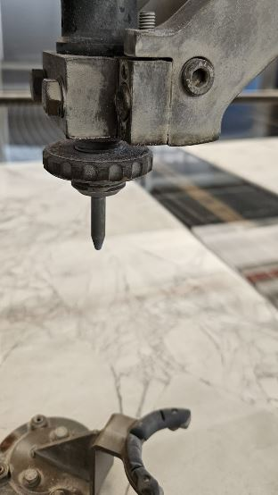
Ruotare la ghiera per togliere il focalizzatore.

Sostituire il focalizzatore con un nuovo elemento recuperando il distanziale
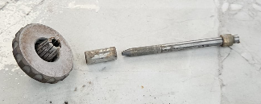
Riassemblare e riavvitare la ghiera dopo aver inserito il nuovo pezzo
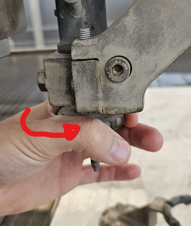
Rimontare il tastatore lastra
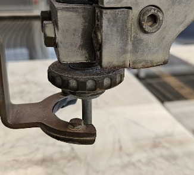
Eseguire la tastatura ugello per impostare il corretto valore “Delta Z”
Prima di procedere leggere attentamente le | |
Intervalloogni 1000 ore di lavoro | Complessità operazioneMedium03 / 05 |
Figura autorizzataOperatore macchina | DPI previsti:  |
Ruotare l’asse A a 90_ per poter poi accedere alla chiusura sulla testa
Togliere il carter

Togliere il carter di protezione sotto la testa
Togliere il fermatubo
Sfilare da sotto il tubo memorizzando il percorso, dovrà poi essere passato quello nuovo seguendo lo stesso percorso
Infilare il nuovo tubo abrasivo
Bloccare il tubo con l’apposito aggancio
Richiudere i carter stando attenti ai cavi presenti sotto la testa
Video
Prima di iniziare qualsiasi operazione di installazione, setup o manutenzione leggere attentamente TUTTI i manuali di istruzione, documenti e guide forniti con la macchina.
Chi esegue l’operazione è l'unico responsabile del corretto funzionamento e della manutenzione della macchina.
Donatoni Macchine declina espressamente ogni responsabilità per eventuali infortuni (inclusa la morte) o danni all'attrezzatura o ad altri beni a causa di un uso o di una manutenzione impropri della macchina, così come per il mancato rispetto delle procedure stabilite nel manuale di istruzioni dell'attrezzatura o in qualsiasi altro materiale e procedura di sicurezza. Se si incontrano problemi o difficoltà, invitiamo vivamente a contattare la Donatoni Macchine o il vostro centro di assistenza di riferimento.
La sicurezza è un priorità. Se hai domande, non esitare a contattare l’assistenza Donatoni ai seguenti recapiti:
T: _39 045 6862899
WhatsApp: _39 045 7740052
Telegram: @donatonimacchine_bot📞